Attirer
Des hooks simples et directs pour capter l’attention dès les premières secondes.

LencyUne série de 3 Reels pensée pour installer Lency dans l’univers cinéma : culture, recommandations, rythme court et identité visuelle reconnaissable.
Utilise les flèches du clavier pour naviguer.
Lency est une plateforme SaaS dédiée à l’audiovisuel. L’objectif des vidéos n’est pas de vendre directement l’outil, mais de créer un premier lien avec les créateurs, étudiants en cinéma, cinéphiles et passionnés d’image.
Des hooks simples et directs pour capter l’attention dès les premières secondes.
Des contenus ciné accessibles qui donnent envie de commenter, débattre et suivre la marque.
Un territoire de marque autour de la culture audiovisuelle avant la mise en avant produit.
Chaque vidéo reprend un format reconnaissable : une promesse claire, une sélection de films, un rythme rapide, puis un appel à l’interaction.
Une phrase d’entrée orientée bénéfice : culture ciné, films d’été ou sorties du mois.
Des films présentés avec un angle simple, visuel et mémorisable.
Cuts courts, alternance des intervenants et incrustations pour garder l’attention.
Question finale et abonnement pour transformer la vue en engagement.
La présentation reprend l’univers Lency : orange électrique, neutres minéraux, formes inspirées de l’objectif de caméra, typographie massive pour les titres et lecture plus douce pour les textes.
Le regard devient le signe central : voir, cadrer, sélectionner, raconter.
Des sujets simples à comprendre, capables de toucher une audience large : classiques des années 90, films pour l’été, sorties du mois.
Chaque film est présenté avec une phrase utile, un angle émotionnel ou visuel, puis un bénéfice clair pour le spectateur.
L’alternance entre deux personnes permet de relancer l’attention et de donner un rythme plus naturel à la série.
Le tournage est conçu pour faciliter les incrustations, garder le visage lisible et donner un rendu plus professionnel qu’une simple vidéo face caméra.
Un cadre accessible, maîtrisable et cohérent avec le projet étudiant.
Le sujet reste centré avec de l’espace pour les affiches et extraits.
Une captation stable, compacte et adaptée aux contenus sociaux.
Une voix plus propre, essentielle pour retenir l’attention.
Une lumière diffuse pour éviter le rendu plat et ajouter de la profondeur.
Sur CapCut, le montage repose sur une logique très rythmée : aucun blanc inutile, des effets placés au moment exact et des éléments visuels qui apparaissent pour soutenir le discours.
Assombrir légèrement les bords pour recentrer le regard.
Supprimer blancs, hésitations et respirations inutiles.
Passer le rush en arrière-plan et faire ressortir le film cité.
Whoosh, pop, ding ou clic pour souligner les transitions.
Le script ne sert pas seulement à savoir quoi dire. Il sert à créer une mécanique répétable : promesse claire, sélection rapide, preuve visuelle et question finale.
Chaque Reel commence par une phrase bénéfice : améliorer sa culture ciné, trouver des films pour l’été ou repérer les sorties du mois.
Les films sont présentés avec un angle simple : ambiance, intérêt visuel, émotion ou référence culturelle.
Les répliques sont courtes pour permettre des cuts propres, des incrustations et une alternance naturelle entre les intervenants.
Chaque vidéo finit par une question ou une invitation à commenter, afin de favoriser l’engagement.
Un contenu de recommandation qui positionne Lency comme un compte capable d’apporter de la culture cinéma de façon accessible.
« Voici 5 films des années 90 que tu dois absolument voir pour améliorer ta culture ciné. »
Classiques cultes et références fortes : Pulp Fiction, Se7en, La Haine, Fight Club et Matrix.
Créer de la connivence avec les cinéphiles et ouvrir la discussion en commentaire.
Demander le film préféré des années 90 pour générer des réponses simples.
Un angle saisonnier, plus léger, pensé pour être consommé rapidement et partagé facilement.
« Voici 6 films que tu dois absolument voir pour cet été. »
Films associés à une émotion ou une ambiance : vacances, soleil, road trip, musique et belles images.
Utiliser une période de l’année pour rendre le contenu plus actuel et plus mémorisable.
Demander le préféré pour pousser les spectateurs à se positionner.
Un contenu plus chaud, proche de la veille culturelle, qui montre que Lency peut suivre l’actualité du cinéma.
« Voici 6 films que tu dois absolument voir en juin. »
Présenter des sorties variées : comédie, animation, blockbuster, horreur et projet français.
Se placer dans les conversations du moment avec un format facilement renouvelable chaque mois.
Demander ce que la personne ira voir en premier pour déclencher une réponse directe.
Accessible, direct, conversationnel, avec une vraie logique de recommandation.
Orange Lency, typographie impactante, incrustations cinéma et énergie urbaine.
Alternance face caméra, cuts rapides, effets sonores et affiches qui poppent.
Développer la notoriété avant de faire entrer progressivement le produit dans l’écosystème de contenu.
Le travail vidéo permet à Lency de parler aux créatifs avant même de parler outil. La série construit un territoire : cinéma, image, culture, recommandation et communauté.
À retenir : le format court sert ici de porte d’entrée. Il crée de la visibilité, installe la personnalité de marque et prépare le terrain pour des contenus plus orientés plateforme.
Tester plusieurs hooks, suivre la rétention, comparer les CTA et décliner les meilleurs formats en carrousels ou contenus coulisses.